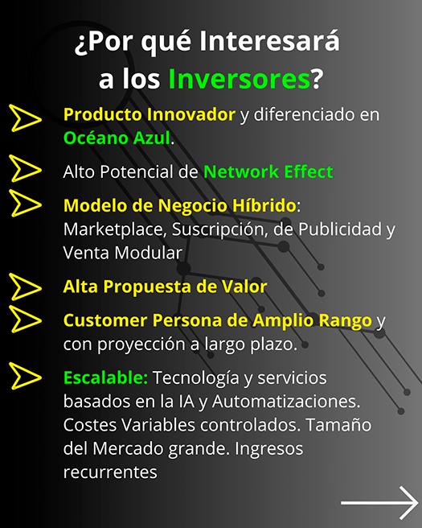

En el año 2000, mientras soñaba con escribir una novela de ciencia ficción, surgió una pregunta que puso en marcha una revolución creativa:
¿cómo sería la literatura del futuro?
Tras recordar las grandes obras de Orwell, Víctor Hugo, Dostoyevski, Ken Follet, Bradbury, Dumas, Pérez‑Reverte y García Márquez, comprendí algo esencial: las grandes historias despiertan emociones. Pero ¿y si la ecuación se invirtiera?
Y si, en vez de que las Historias creen Emociones… fueran Nuestras Emociones las que crearan las historias?
Años después, empecé a experimentar escribiendo historias por encargo basadas en las emociones de cada lector. Estudiaba la personalidad del destinatario, sus miedos, sueños, personajes favoritos e incluso sus películas predilectas. Así sabía qué le haría reír, llorar o enfadarse y podía construir un relato único y personal para él.
Con el tiempo me di cuenta de que estas historias personalizadas respondían a la pregunta inicial. ¿Era posible conocer al lector antes de que leyera la historia y permitir que sus emociones moldearan la narración de forma dinámica? El resultado de esa búsqueda es el Selbook: mi respuesta particular a cómo evolucionará la literatura.
¿Qué es un Selbook?
Un Selbook es una novela digital que se adapta en tiempo real a las emociones,
reacciones y preferencias del lector, creando una experiencia narrativa única e irrepetible. Más allá de un libro interactivo, emplea inteligencia artificial para orientar las rutas de lectura sin que el usuario sea plenamente consciente. Cada lectura es distinta, incluso para el mismo lector, y la historia mantiene un hilo central con personajes y escenarios comunes.